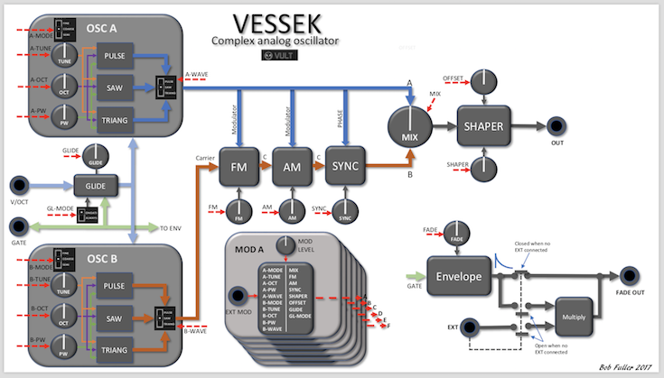

Vessek

Vessek is an oscillator for people looking for analog sound.
Vessek started modeling the basic circuit of an analog saw wave oscillator. Most of the parameters were initially obtained from my compact analog bass synth. I got a pretty good matching of the sound that I bet it would pass a blind test. Later in the development, samples of other well known analog oscillators were sent to me by members of the VCV Rack community. From the samples I was able of extracting characteristics of the waves that help me fit my model.
The current model is a blend of the characteristics of different analog oscillators with some added tweaks to give Vessek it’s own personality.
Diagram
Thanks to Bob Fuller for making the diagram of Vessek. You can get the pdf version HERE

Documentation
Vessek consists of two oscillators (A and B) with similar parameters. Oscillator A can modulate oscillator B using FM and AM. To see all features of Vessek check the “Vessek Overview” video below.
Vessek features the Vult modulation section that allows controlling any parameter in the interface. To activate, press one of the buttons and move the parameter you want to change to assign it.
- Tune Switch: defines how the Tune knob behaves. It has three modes:
- Fine: sets a tuning range one semitone up and down.
- Coarse: sets a tuning range one octave up and down.
- Semi: sets a tuning range one octave up and down but the tunning is quantized to every semitone.
- Tune: offsets the V/OCT input. The range is defined by the Tune Switch.
- Oct: offsets the V/OCT input three octaves up and down. Modulate this knob and you’ll get some nice arpeggios.
- PW: sets the pulse width of the wave. This parameter affects all the waveforms. In the case of the Saw it produces a double Saw sound which is more fat that the simple one. In the case of the triangle changes the asymmetry of the wave.
- Wave: selects the wave.
- Pulse: the good old pulse. Modulate the PW parameter to make it mor interesting.
- Saw: do you want a super-saw? change the PW and Tune of the two oscillators.
- Triang: the triangle of Vessek is a bit more special, it produces a more fat triangle that is good for bass sounds.
- Mix: controls the level of the two oscillators.
- FM: uses the output from oscillator A to modulate the frequency of oscillator B. This modulation adds some nice harmonics to the sound.
- AM: uses the output from oscillator A to modulate the amplitude of oscillator B.
- Sync: produces a gradual modulation of oscillator B based on the reset signal of A. In a low value, it interferers the phase of oscillator B. As the value goes up, oscillator B starts resetting at the same time as oscillator A. In the maximum setting we have a hard-sync sound. Using Sync, the inharmonic sounds produced by the FM become more harmonic.
- Shaper: adds a final distortion to the mixed wave. This can really spice the sound. The tonal characteristics can be changed with the Offset parameter.
- Offset: adds a offset voltage to the wave before going into the Shaper in order to produce an asymmetric distortion.
- Fade: this is probably the most overlooked feature of Vessek. The Fade parameter controls the decay time of an envelope triggered by the Gate input. If nothing is connected to the Ext input, the voltage of the envelope is output through the Out jack (in Fade section). If a signal is connected to the Ext jack, the envelope is multiplied (with a VCA) this signal and output through the Out jack. This signal can be used to modulate any parameter of Vessek using the modulation section. With this signal you can produce sounds that change, for example: percussive sounds by modulating the FM or Shape parameter.
- Ext: this jack takes a signal that is affected by the Fade envelope (see Fade parameter).
- Out (Fade section): outputs the Fade envelope that can be used to modulate any parameter (see Fade parameter).
- Glide: controls the maximum rate of change of the V/OCT signal. Glide can be used to produce a gradual change in pitch of the oscillator. For example, if the V/OCT signal changes abruptly, the glide will make Vessek change softer to the target voltage.
- Mode(Glide section): defines when the glide is applied.
- Skip Gate: Glide is not applied if the V/OCT signal changes at the same time as a Gate signal. This will produce an abrupt transition of the pitch when the Gate changes.
- Always: always apply the glide no matter the signal of the Gate.
- Master Tune: this is a non randomizable control that can be used to change the pitch of both oscillators at the same time.
- V/OCT: this is the main input of the oscillator. It defines the pitch using the 1V per octave convention. Zero volts corresponds to a C1 note.
- Gate: a typical gate signal that controls the Glide and Fade functions of Vessek.
- Out: main output of the mixed waves.
Videos
Help improve this manual here.